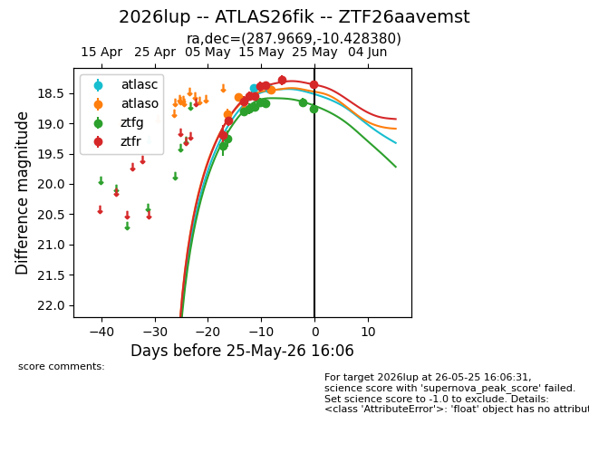
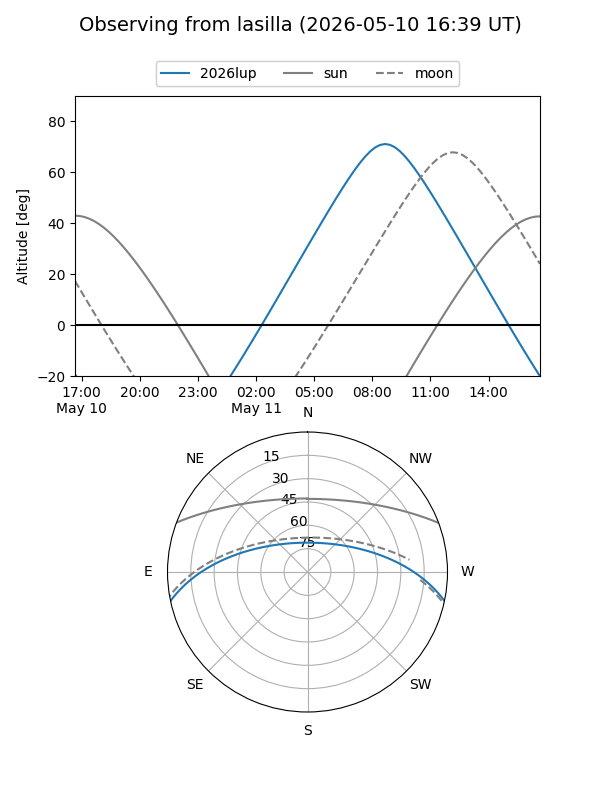
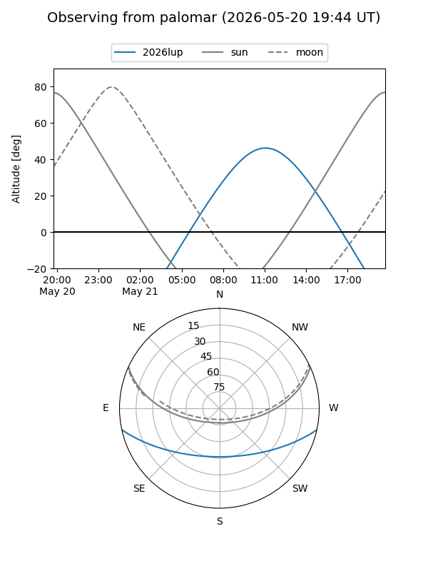
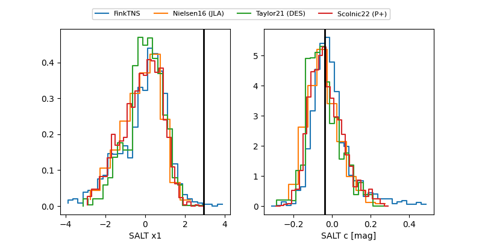

2026lup
Target 2026lup at 2026-05-25 16:08
Aliases and brokers:
lsst-FINK: link
lsst-Lasair: link
lsst-ALeRCE: link
ztf-FINK: link
ztf-Lasair: link
ztf-ALeRCE: link
TNS: link
YSE: link
alt names
ZTF26aavemst (ztf,fink_ztf)
2026lup (tns,yse)
ATLAS26fik (atlas)
Coordinates:
equatorial (ra, dec) = 287.9669,-10.42838
equatorial (HMS+DMS) = 19:11:52.06,-10:25:42.17
galactic (l, b) = (25.8804,-9.23343)
Flags:
TNS confirmed: nan
Photometry:
last atlasc=18.43, atlaso=18.45, ztfg=18.75, ztfr=18.36
2 atlasc, 4 atlaso, 9 ztfg, 9 ztfr detections
Lightcurve

Visibility


Additional plots
